Class 17: Graphs I
04-09-2021
“One needs to do a serious amount of reading and writing, and not just thinking, in order to get anywhere serious in mathematics.”
Many situations in mathematics and computer science can be expresed by two things:
- A set of points
- Lines joining some pairs of points
And if we disregard the properties of the joins (length, shape, etc) and we only pay attention to which pairs are joined and which are not, then we arrive at the mathematical notion of a graph. Formally, we have:
Definition 1. A graph \(G\) is and ordered pair \((V, E)\), where \(V\) is some set and \(E\) is a set of 2-point subsets of \(V\). The elements of \(V\) are called vertices of the graph \(G\) and the elements of \(E\) edges of \(G\).
Definition 2. A directed graph \(G\) is and ordered pair \((V, E)\), where \(V\) is some set and \(E\) is a set pairs of elements of \(V\).
Now, we can express different situations using the definition of a graph and directed graph. For example.
The statement “Descartes loves Sofia and Sofia loves Descartes” can be expresed as a graph
\(G_1 = (V_1, E_1)\) where \(V_1 = \{\text{Descartes}, \text{Sofia}\}\) and \(E_1 = \{\{\text{Descartes}, \text{Sofia}\}\}\)
Similarly, it can be expresed as a directed graph
\(G_2 = (V_2, E_2)\) where \(V_2 = \{\text{Descartes}, \text{Sofia}\}\) and \(E_2 = \{(\text{Descartes}, \text{Sofia}), (\text{Sofia}, \text{Descartes})\}\)
Here \(E_{G}\) represents a relationship of love. In the same manner, we can define a graph to express some relationship between a set of elements.
Observation 1. If \((u, v) \in E_{G}\). It does not imply that \((v, u) \in E_{G}\)
Now, we understand the definition of a graph. Next, we need to known some popular graphs.
- Complete graph \(K_n\)
\(V = \{1, 2, \dots, n\}\)
\(E = V \times V \setminus \{\{u, u\}, u \in V\}\)
- Cycle \(C_n\)
\(V = \{1, 2, \dots, n\}\)
\(E = \{\{i, i + 1\}: i = 1, 2, \dots, n - 1\} \cup \{\{1, n\}\}\)
- Path \(P_n\)
\(V = \{0, 1, \dots, n\}\)
\(E = \{\{i - 1, i\}: i = 1, 2, \dots, n\}\)
- Complete bipartite graph \(K_{n, m}\)
\(V = \{u_1, \dots, u_n\} \cup \{v_1, \dots, v_m\}\)
\(E = \{\{u_i, v_j\}: i = 1, 2, \dots, n, j = 1, 2, \dots, m \}\)
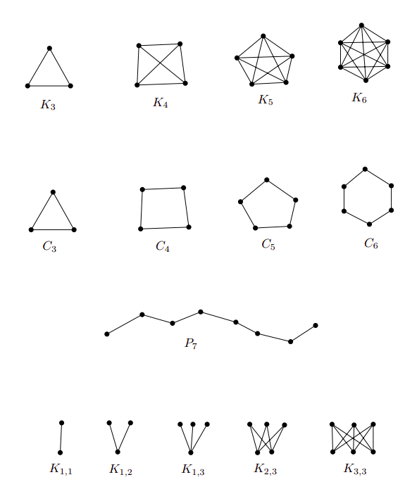
Images taken from Invitation to Discrete Mathematics, pages 112, 113
There are different ways how we can represent a graph \(G = (V, E)\). Here we mention two:
- Adjacency matrix
It is a matrix \(A_G = (a_{ij})_{i,j=1}^n\) where
\[ a_{ij} = \begin{cases} 1 & \quad \text{if } \{v_i, v_j\} \in E \\ 0 & \quad \text{otherwise} \end{cases} \]
- Adjacency list
It is a computational representation using a list for each vertex to save the adjacent element of each vertex.
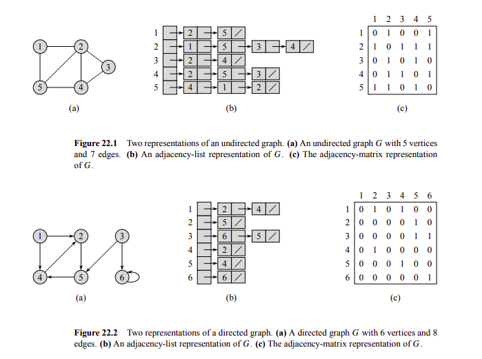
Images taken from Introduction to Algorithms - page 590
Obviously, the representation to use depends on the problem (consider space complexity, time access complexity, etc).
Now, let’s study an interesting advantage gained by using \(A_G\).
Definition 3. Let \(G = (V, E)\) be a graph. A path in \(G\) is a sequence:
\[(v_0, e_1, v_1, \dots, e_t, v_t)\]
where \(v_0, v_1, \dots, v_t\) are mutually distinct vertices of \(G\) and \(e_i = \{v_{i - 1}, v_i\} \in E(G): i = 1, 2, \dots, t\). Here we say that we have a path from \(v_0\) to \(v_t\) of length \(t\).
Similarly, we have:
Definition 4. Let \(G = (V, E)\) be a graph. A cycle in \(G\) is a sequence:
\[(v_0, e_1, v_1, \dots, e_{t-1}, v_{t-1}, e_t, v_0)\]
where \(v_0, v_1, \dots, v_{t-1}\) are mutually distinct vertices of \(G\), \(e_i = \{v_{i - 1}, v_i\} \in E(G): i = 1, 2, \dots, t-1\) and \(e_t = \{v_{t-1}, v_0\} \in E(G)\). Here we say that we have a cycle of length \(t\).
Proposition 1. Let \(G = (V, E)\) be a graph with \(V = \{v_1, v_2, \dots, v_n\}\). Let \(A = A_{G}\) be its adjacency matrix. Let \(A^k\) denothe the \(k\)th power of \(A\). Let \(a_{ij}^{(k)}\) denote the element at position \((i, j)\) of \(A^k\). Then, \(a_{ij}^{(k)}\) is the number of walks of length exactly \(k\) from vertex \(v_i\) to vertex \(v_j\) in the graph \(G\).
Proof: Left to the reader (use induction).
Definition 4. A graph \(G = (V, E)\) is connected if \(\forall x, y \in V(G)\), \(G\) contains a path from \(x\) to \(y\).
Property 1. The complement of a connected graph is connected.
Proof. Left to the reader.
Definition 5. Let \(G = (V, E)\) be a connected graph. We define the distance of two vertices \(v_1, v_2 \in V(G)\), denoted by \(d_G(v_1, v_2)\), as the length of the shortest path from \(v_1\) to \(v_2\) in \(G\). Hence \(d_G\) is a function, \(d_G: V \times V \to \mathbb{R}\), and it is called the distance function or the metric of the graph \(G\). It has the following properties:
\(d_G(v, v) \geq 0\) and \(d_G(v_1, v_2) = 0 \leftrightarrow v_1 = v_2\)
\(d_G(v_1, v_2) = d_G(v_2, v_1) \, \forall v_1, v_2 \in V(G)\)
\(d_G(v_1, v_2) \leq d_G(v_1, v_3) + d_G(v_3, v_2) \, \forall v_1, v_2, v_3 \in V(G)\)
Now, using definition 5 and proposition 1, we have the following corollaly.
Corollary 1. \(\forall v_i, v_j \in V(G), d_G(v_i, v_j) = \min(k \geq 0: a_{ij}^{(k)} \not = 0)\)
This corollaly is really important. First, notice how we have reduced the computation of \(d_G\) to matrix multiplication. One application of this idea is the following:
Property 2. A graph \(G\) contains a triangle (i.e. a \(K_3\)) \(\leftrightarrow \exists \, i, j \mid a_{ij}^{(1)} \not = 0 \land a_{ij}^{(2)} \not = 0\).
What if two graph have the same structure, but its vertices are named differently? We need a way to express this notion. That is the reason of the following definition.
Definition 6. Two graphs \(G = (V, E) \land G' = (V', E')\) are called isomorphic if a bijection \(f: V \to V'\) exists such that
\[\{x, y\} \in E \leftrightarrow \{f(x), f(y)\} \in E'\]
holds for all \(x, y \in V, x \not = y\). Such an \(f\) is called an isomorphism of the graphs \(G\) and \(G'\). The fact that \(G\) and \(G'\) are isomorphic is written as \(G \cong G'\).
Observation 2. The relation \(\cong\) (“to be isomorphic”) is a class of equivalence on any set of graphs.
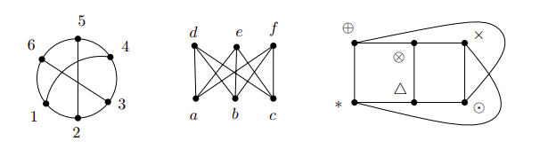
Examples of isomorphic graphs taken from Invitation to Discrete Mathematics, page 114
Determining if two graphs are isomorphic is not at all an easy problem. It is suspected that no efficient algorithm exists, but for small graphs a brute force approach can be enough. In order to do it just check all the \(n!\) possible bijections. The implementation of this idea is simple using the following property:
Property 3. Two graphs \(G, G'\) are isomorphic if and only if a permutation matrix \(P\) exists such that \(A_G' = P A_G P^T\).
A matrix \(P\) is called a permutation matrix if its entries are 0 and 1 and each row and column contain preciely one 1.
Proof. Left to the reader.
Definition 7. Let \(G\) be a graph and \(v \in G(V)\). The degree of vertex \(v\) is defines as \(deg_G(v) = |e \in E(V), v \in e|\).
Now, we can formulate this famous statement:
Proposition 2. For each graph \(G = (V, E)\) we have:
\[\displaystyle\sum_{v \in V} deg_{G}(v) = 2 |E|\]
Proof. Exercise for the reader.
From the aboive proposition, we get a direct corollary.
Corollary 2 (Handshake lemma). The number of odd-degree vertices is even in any graph.
There are a lot of important properties about the topic. For instance.
Property 4. Let \(G\) be a graph in which all vertices have degree at least \(d\). Then, \(G\) contains a path of length \(d\).
Proof. Excercise for the reader.
Property 5. Let \(G\) be a graph with all vertices at least 3. Then \(G\) contains a cycle.
Proof. Excercise for the reader :D.
Definition 8. Let the vertices of a graph \(G\) be \(v_1, v_2, \dots, v_n\). The sequence
\[(deg_G(v_1), deg_G(v_2), \dots, deg_G(v_n))\]
is called the degree sequence of the graph \(G\), or a score of \(G\).
Next, a valid question to ask is: How can we known if a sequence of integers is a graph score or not?
Fortunately, we can answer the above question with the following theorem.
Theorem 1 (Score theorem). Let \(D = (d_1, d_2, \dots, d_n)\) de a sequence of natural numbers, \(n > 1\). Suppose that
\[d_1 \leq d_2 \leq \dots \leq d_n\]
Let \(D'\) denote the sequence \((d_1', d_2', \dots, d_{n-1}')\), where
\[ d'_i = \begin{cases} d_i & \quad \text{for } i < n - d_n\\ d_i - 1 & \quad \text{for } i \geq n - d_n \end{cases} \]
Then \(D\) is a graph score if and only if \(D'\) is a graph score.
Proof. Read Invitation to Discrete Mathematics, section 4.3.
There is a kind of graphs where problems become easier: trees. Let’s study them!
Definition 9. A tree is a connected graph containing no cycle.
This is the definition we will be using, but there are different ways how we can define them.
Theorem 2 (Tree characterization). The following conditions are all equivalent for a graph \(G = (V, E):\)
G is a tree.
(Path uniqueness) \(\forall x, y \in V(G),\) there exists exactly one path from \(x\) to \(y\).
(Minimal connected graph) \(G\) is connected and deleting any of its edges gives rise to a disconnected graph.
(Maximal graph without cycles) \(G\) contains no cycle and any graph arising from \(G\) by adding and edge already contains a cycle
(Euler’s formula) \(G\) is connected and \(|V| = |E| + 1\).
Proof. Left as exercise to the reader.
Definition 10. Let \(v\) be a vertex of a graph \(G = (V, E)\) with \(deg_G(v) = 1\). Then \(v\) is a end-vertex of \(G\) (a.k.a. leaf).
Some important properties of a graph are the following:
Property 6. Let \(G\) be a tree and \(v\) a leaf of \(G\), then \(G - v\) is a tree.
Proof. Left to the reader as exercise.
Property 7. Let \(G\) be a tree containing a vertex of degree \(k\), then \(G\) has at least \(k\) end-vertices.
Proof. Left to the reader as exercise.
Finally, we define the following two concepts:
Definition 11. A graph \(G\) where each component is a tree is called a forest.
This definition will be useful in next sections.
Definition 12. A graph \(G\) is called bipartite if the set \(V(G)\) can be divided into two disjoint sets \(V_1\) and \(V_2\) in such a way that each edge of \(G\) connects a vertex from \(V_1\) to a vertex of \(V_2\).
Observation 3. A tree is bipartite.
Moreover, we have this simple but useful property.
Property 8. A graph is bipartite is and only if it contains no cycle of odd length.
Proof. Left to the reader as exercise.
Now, we need a computational way to explore our graph and to find properties of them. So, let’s study two simple and powerful algorithms: BFS and DFS.
The idea is to start with a vertex an put it to a queue, then add its adjacents, then the adjacents of its adjacents, and so on.
The algorithm maintains the following properties for each vertex:
- Color: It describes the state of the vertex.
- WHITE: Not visited.
- BLACK: Visited.
- GRAY: Processing.
- d: The distance from the center.
- \(\pi\): The predecesor of the vertex (the one who put it to the queue).
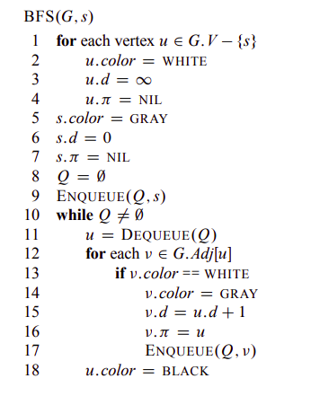
BFS pseudocode. Taken from Introduction to Algorithms - page 595
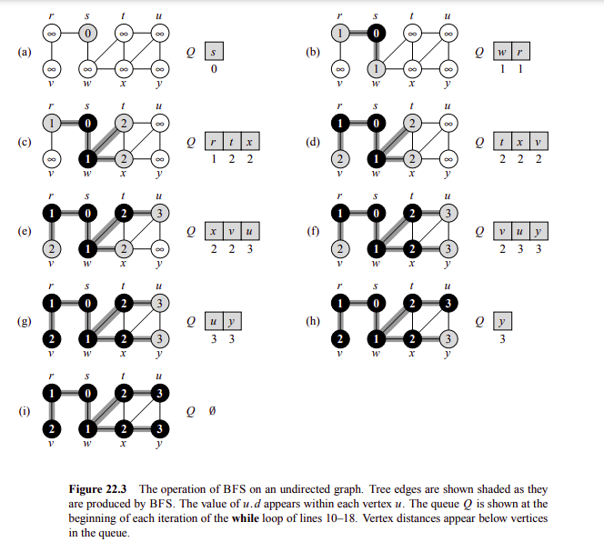
Example operation of BFS. Taken from Introduction to Algorithms - page 596
Observation 4. It we start a BFS from vertex \(s\) in a graph \(G\). Then, it holds that for any edge \((u, v) \in E(V), d_G(s, u) \leq d_G(s, v) + 1\)
Observation 5. Suppose that we run a BFS on a graph \(G\) from vertex \(s\) and the order of vertices added to the queue are \((v_1, v_2, \dots, v_n)\). Then it holds:
\[d_G(s, v_1) \leq d_G(s, v_2) \leq \dots \leq d_G(s, v_n)\]
\[d_G(s, v_{i+1}) - d_G(s, v_i) \leq 1: i = 1, 2, 3, \dots, n - 1\]
Observation 6. If we run a BFS on a graph \(G\) from vertex \(s\), we can build a graph \(G_{\pi} = (V, E')\) where \(E' = \{(u.\pi, u): \, \forall u \in V(G), u \not = s\}\). \(G_{\pi}\) is known as the BFS tree and it represent the shortest path distance from \(s\) to the other vertices.
Observation 7. The running time of BFS algorithm is \(O(|V| + |E|)\) and its space complexity is \(O(|V|)\).
Here we present some common applications of BFS algorithm:
Find the connected components. Just run a BFS from every vertex if it has not been visited.
Check if a graph is bipartite. After the execution of the algorithm, there must not be an edge \((u, v)\) such that \(u.color = v.color\).
Find the shortest path from to vertex \(u\) to vertex \(v\). Run a BFS from \(u\), then find the unique path from \(u\) to \(v\) in the BFS tree.
Find the shortest cycle. Run a BFS from each vertex \(u \in V(G)\), then if during the exploration you find a vertex \(v\) such that \(v.color = GRAY\), then you have the shortest cycle from vertex \(u\).
The idea is to start with a vertex and explore recursively by each of its neighbors.
The algorithm maintains the following properties for each vertex:
- Color: It describes the state of the vertex.
- WHITE: Not visited.
- BLACK: Visited.
- GRAY: Processing.
- d: The discovered time of the vertex.
- f: The finished time of exploration of the vertex.
- \(\pi\): The predecesor of the vertex (the one who put it to the queue).
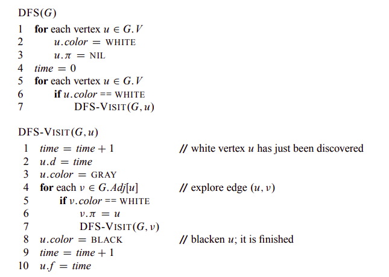
DFS pseudocode. Taken from Introduction to Algorithms - page 604
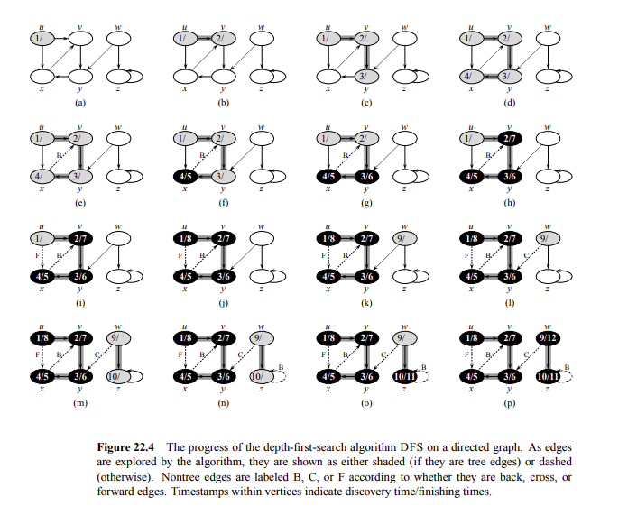
Example operation of DFS. Taken from Introduction to Algorithms - page 605
Moreover, if we run DFS algorithm on a graph \(G\), we can build a graph \(G_{\pi} = (V, E')\) where \(E' = \{(u.\pi, u): \, \forall u \in V(G), u.\pi \not = NIL\}\). \(G_{\pi}\) is known as the DFS tree or DFS forest if \(G\) has more than one component.
Observation 8. The running time of DFS algorithm is \(O(|V| + |E|)\) and its space complexity is \(O(|V|)\).
Definition 13. A rooted tree is a pair \((T, r)\), where \(T\) is a tree and \(r \in V(T)\) is a distinguished vertex of \(T\) called the root.
IMPORTANT. When you have a problem with trees, the very first idea is to root it.
Definition 14. If we run a DFS on a rooted tree \((T, r)\), we get a directed tree \(T_{\pi}\). Then, for two vertices \(x, y \in V(T)\), we say that \(x\) is an ancestor of \(y\) and \(y\) is a descendant of \(x\).
Observation 9. If we run DFS algorithm in a graph \(G = (V, E)\) for any two vertices \(u, v\), exactly one of the following three conditions holds:
\([u.d, u.f]\) and \([v.d, v.f]\) are disjoint, and neither \(u\) nor \(v\) is a descendant of the other in \(G_{\pi}\).
\([u.d, u.f]\) is entirely contained in \([v.d, v.f]\), and \(u\) is a descendant of \(v\) in \(G_{\pi}\).
\([v.d, v.f]\) is entirely contained in \([u.d, u.f]\), and \(v\) is a descendant of \(u\) in \(G_{\pi}\).
Furthermore, we can use the DFS algorithm to classify the edges of a graph \(G\). We have:
Tree edges are the edges in \(G.{\pi}\).
Back edges are the edges \((u, v) \in E(G)\) that connect \(u\) to an ancestor of \(v\) in \(G_{\pi}\).
Forward edges are the edges \((u, v) \in E(G)\) that connect \(u\) to a descendant of \(v\) in \(G_{\pi}\).
Cross edges are the edges \((u, v) \in E(G)\) that connect different components in \(G_{\pi}\).
Observation 10. If we run DFS algorithm in a tree \(G = (V, E)\), then every edge is a tree edge or a back edge.
The common applications of DFS algorithm will be study in another class in more depth.
Definition 15. For a vertex \(v\) in a graph \(G\), let the symbol \(ex_G(v) = \max(dis(v, u), u \in V(G))\). The number \(ex_G(v)\) is called the excentricity of the vertex \(v\) in the graph \(G\) and we have:
The diameter of a graph is defines as the maximum value of \(ex_G(v), \forall v \in V(G)\).
\(C(G) = \{v \in V(G): v = \min(ex_G(u), \forall u \in V(G)) \}\) is called the center of \(G\).
Now, how we can find the diameter of a graph?
Well, for a general graph we will study the solution in the next class. Now, we can study an \(O(|V| + |E|)\) solution for a tree.
It is possible to solve the problem using dynamic programming on trees, but there exists an easier greedy solution.
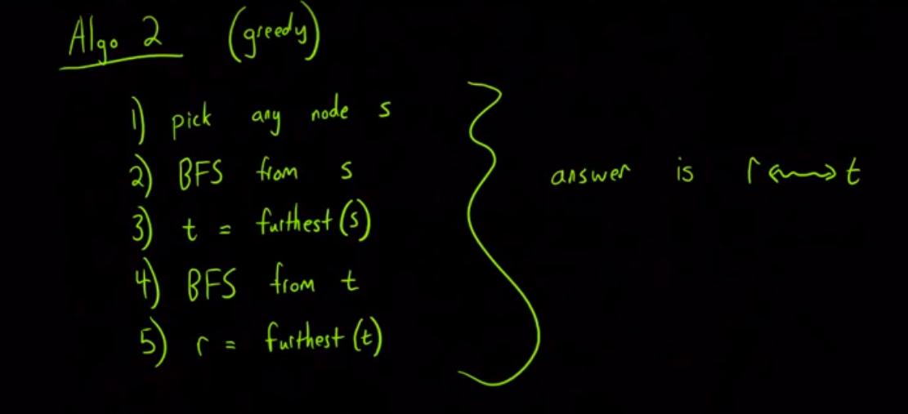
Image taken from Algorithms Live! - Episode 1 - Trees and Diameters. The proof can also be found in the video.
Now, we can try to solve a more interesting problem. How many unordered pairs \(\{u, v\}\) exists such that \(d_G(u, v)\) is the diameter of a tree?
The key idea to solve this problem is the following ideas:
Proposition 3. For any tree \(T\), \(C(T)\) has at most 2 vertices. If \(C(T)\) consists of 2 vertices \(x\) and \(y\) then \(\{x, y\} \in E(T)\).
Proof. Idea: Run a multi-source BFS from each leaf of the tree, the furthest vertices are \(C(T)\) (at most two). A formal proof can be found in Invitation to Discrete Mathematics, section 5.2.
Theorem 3. Let \(T\) be a tree and \(c \in C(T)\), then all vertices \(u, v\) that have a path \(P\) of length equal to the diameter of \(T\) hold that \(c \in P\).
Proof. Watch Algorithms Live! - Episode 1 - Trees and Diameters.
Now, we can solve the problem. First, lets separate the solution in two cases:
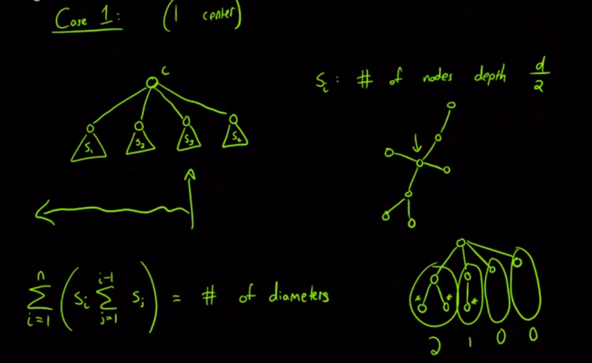
Image taken from Algorithms Live! - Episode 1 - Trees and Diameters.
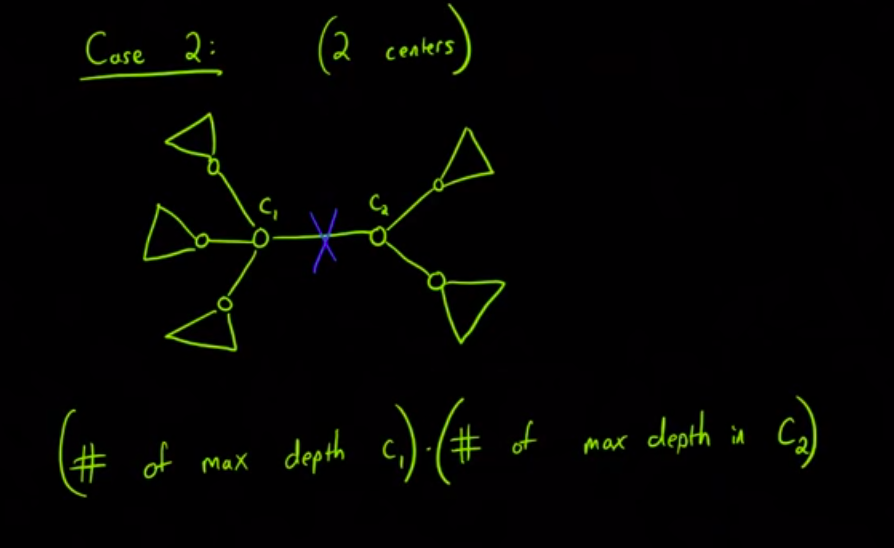
Image taken from Algorithms Live! - Episode 1 - Trees and Diameters.
Previously, we say that graph isomorphism checking is a difficult problem, but the case is different when the graph is a tree.
First, let’s define some concepts.
Definition 16. A planted tree is a rooted tree \((T, r, \nu)\) plus a drawing of \(T\) in the plane. Here \(\nu\) represents an ordering of the vertices by how they appear (left-to-right order).
Definition 17. Let \((T, r), (T', r')\) be two rooted trees, then \(f: V(T) \to V(T')\) is an isomorphism of the rooted tres if \(f\) is an isomorphism of trees \(T\) and \(T'\) and \(f(r) = r'\). This is denoted by \((T, r) \cong' (T', r')\).
Definition 18. Let \((T, r, \nu), (T', r', \nu')\) be two planted trees, then \(f: V(T) \to V(T')\) is an isomorphism of the planted tres if \(f\) is an isomorphism of rooted trees \((T, r)\) and \((T', r')\) and it preserves the left-to-right ordering. This is denoted by \((T, r, \nu) \cong'' (T', r', \nu')\).
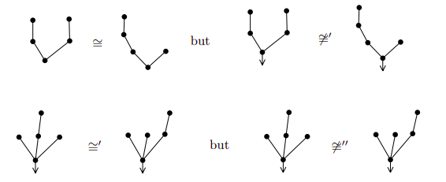
Examples taken from Invitation to Discrete Mathematics, page 161.
Now, we can define the coding of a planted tree as follow:
Each end-vertex distinct from the root is assigned the code \(01\).
Let \(v\) be the vertex with sons \(v_1, v_2, \dots, v_t\) (written in left-to-right order). If \(A_i\) is the code of the son \(v_i\), then the vertex \(v\) receives the code \(0 A_1 A_2 \dots A_t 1\).
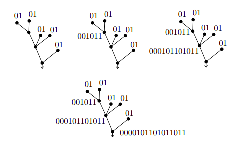
Examples taken from Invitation to Discrete Mathematics, page 161.
Here, we can observe that the coding of a planted tree has length \(2 |V|\) and two planted trees are isomorphic if their coding are equal.
Next, we can extend this solution to work for rooted trees using the following enconding.
Each end-vertex distinct from the root is assigned the code \(01\).
Let \(v\) be the vertex with sons \(v_1, v_2, \dots, v_t\), such that \(A(v_1) \leq A(v_2) \leq \dots A(v_t)\) where \(A(x)\) represent the code of the son \(x\), then the vertex \(v\) receives the code \(0 A_1 A_2 \dots A_t 1\).
Now, it holds that two rooted trees are isomorphic if their coding (using the last enconding) are equal.
Finally, we can focus in solving the problem for a tree. From the previous achievements we realize that we can solve the problem if we find a vertex \(v\) to be used as the root that preserves the isomorphism and actually such a vertex is the center of the tree. Then, we can define the coding of a tree \(T\) as follow:
Case 1. If \(C(T) = \{c\}\), then the coding of \(T\) is the coding of \((T, c)\).
Case 2. If \(C(T) = \{c_1, c_2\}\), then the coding of \(T\) the minimum of the coding of \((T, c_1)\) and the coding of \((T, c_2)\).
Recommended readings:
- Introduction to Algorithms - Sections 22.1, 22.2, 22.3
- Invitation to Discrete Mathematics, chapter 4 and and sections 5.1, 5.2
- Algorithms Live! - Episode 1 - Trees and Diameters
- E-maxx Breadth-first search
- E-maxx Depth First Search
- The () Canonical Form of a Tree